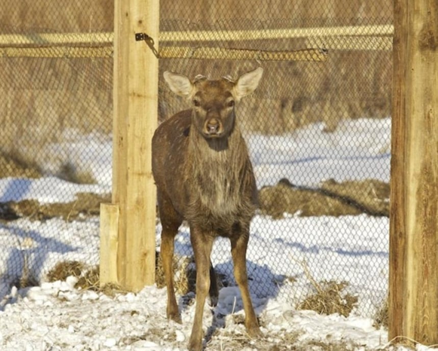
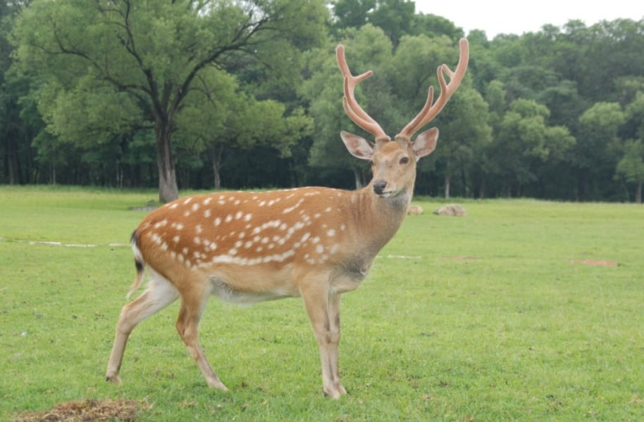
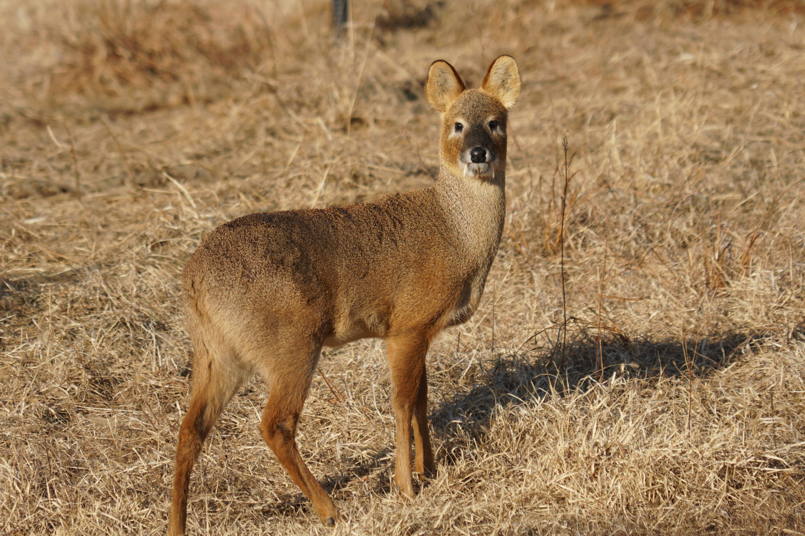

대륙사슴(꽃사슴)
일단 농작물에 피해를 입힌다는 이유였으나
사실은 호랑이 생태를 잘 모르는 일본인 사냥꾼들이 대신 애꿎은 사슴을 잡는 경우가 많아서 북-중 국경지대 제외하고는 야생 기준 멸종됨
(실제로 농작물에 해 입히는 멧돼지 등 다른 놈들은 남획 안 됨)
가죽과 녹용 노리고 사냥되기도 했고, 요샌 가축화된 러시아 출신 사슴에서 녹용 얻는 중
https://www.newspenguin.com/news/articleViewAmp.html?idxno=13598
그리고 대륙사슴의 생태적 지위를 계승한 놈들이

.
고라니임
원래 한반도 서남부 일부에서 주로 서식하던 놈들이 경쟁자와 천적의 절멸로 개체수가 폭발적으로 증가하게 됨
그 증거로 이제 1만 마리 이하 남은 중국 고라니보다 한국 고라니의 유전적 다양성이 더 작음
병신같은 곰복원 사업 떄려치고 토끼 사슴 같은 초식동물 복원 사업같은거 하면 안되나